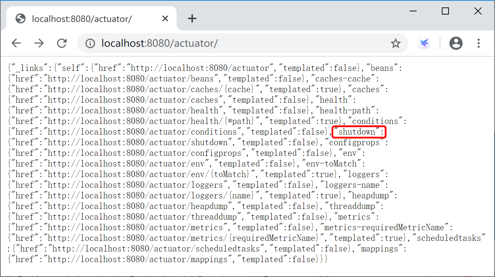

13.1 应用监控介绍
Spring Boot包含了许多附加功能，可以帮助你在将应用程序部署到生产环境时监视和管理它。你可以选择使用HTTP端点或与JMX一起管理和监视应用程序。你可以在你的应用程序中收集审计数据、运行状况和度量（如，性能）数据。SpringBoot自带的监控功能Actuator（执行器）组件，就可以帮助开发人员实现对程序内部运行情况的监控，比如监控服务器状况、Bean加载情况、环境变量、日志信息、线程信息等。
执行器是一个制造业术语，指的是用于移动或控制东西的一个机械装置，一个很小的改变就能让执行器产生大量的运动。
13.1.1 启用Actuator
Spring Boot Actuator模块为应用在生产场景（Production-ready）的监控内置提供了大量的便捷服务。
启动SpringBoot的Actuator模块，最简单的方式就是添加spring-boot-starter-actuator启动器（spring boot starter）。
<dependencies>
<dependency>
<groupId>org.springframework.boot</groupId>
<artifactId>spring-boot-starter-actuator</artifactId>
</dependency>
</dependencies>
13.1.2 端点
执行器端点（endpoints）可用于监控应用及与应用进行交互，Spring Boot包含很多内置的端点，你也可以添加自己的。例如，health端点提供了应用的基本健康信息。
每个端点都可以启用或禁用。你可以通过配置文件（application.properties或application.yml）控制是否启用每一个内置的端点。然后，通过JMX或HTTP远程访问这些启用并暴露的端点。端点的ID映射到一个带/actuator前缀的URL。例如，health端点默认映射到/actuator/health。
在Spring Boot 2.2中，默认HTTP上打开的端点只有health和info，其他端点默认关闭。
| id | 描述 |
|---|---|
| auditevents | 显示当前应用程序的审计事件信息，需要配置有AuditEventRepository Bean |
| beans | 显示应用中Spring Beans的完整列表 |
| caches | 显示可用缓存信息 |
| conditions | 显示自动装配类的状态及及应用信息 |
| configprops | 显示所有 @ConfigurationProperties 列表 |
| env | 显示 ConfigurableEnvironment 中的属性 |
| flyway | 显示 Flyway 数据库迁移信息 |
| health | 显示应用的健康信息（未认证只显示status，认证显示全部信息详情） |
| httptrace | 显示HTTP跟踪信息（默认显示最后100个HTTP请求 - 响应交换） |
| info | 显示任意的应用信息 |
| integrationgraph | 显示Spring Integration graph， 需要依赖 spring-integration-core。 |
| loggers | 显示或修改应用程序内的日志配置。 |
| liquibase | 展示Liquibase 数据库迁移 |
| metrics | 展示当前应用的 metrics 信息 |
| mappings | 显示所有 @RequestMapping 路径集列表 |
| scheduledtasks | 显示应用程序中的计划任务 |
| sessions | 允许从Spring会话支持的会话存储中检索和删除用户会话。 |
| shutdown | 允许应用以优雅的方式关闭（默认情况下不启用） |
| threaddump | 执行一个线程dump |
如果你的应用是一个web应用（Spring MVC，Spring WebFlux或者Jersey），你还能使用如下的这几个额外的监控端点：
| ID | Description |
|---|---|
heapdump |
返回一个hprof堆dump文件。Returns an hprof heap dump file. |
jolokia |
通过HTTP暴露JMX beans（当Jolokia在类路径上时，WebFlux不可用）。需要依赖 jolokia-core。 |
logfile |
返回日志文件内容（如果设置了logging.file.name or logging.file.path属性的话），支持使用HTTP Range头接收日志文件内容的部分信息。 |
prometheus |
以可以被Prometheus服务器抓取的格式显示度量（metrics）信息。需要依赖 micrometer-registry-prometheus。 |
13.1.3 启用端口
默认情况下，除shutdown以外的所有端点均已启用。要配置单个端点的启用，请使用management.endpoint.<id>.enabled属性。以下示例启用shutdown端点：
management.endpoint.shutdown.enabled=true
另外可以通过management.endpoints.enabled-by-default来修改全局端点默认配置，以下示例启用info端点并禁用所有其他端点：
management.endpoints.enabled-by-default=false
management.endpoint.info.enabled=true
需要注意的是，禁用的端点将从应用程序上下文中完全删除。如果您只想更改端点暴露情况，请改为使用include和exclude属性。
- include属性列出了公开的端点的ID，exclude属性列出了不应该公开的端点的ID；
- exclude属性优先于include属性。包含和排除属性都可以使用端点ID列表进行配置。
management.endpoints.web.exposure.include=*
management.endpoints.web.exposure.exclude=env,beans
由于端点可能包含敏感信息，因此应仔细考虑如何暴露它们。
Spring Boot默认暴露端点情况如下表所示：
| ID | JMX | Web |
|---|---|---|
auditevents |
Yes | No |
beans |
Yes | No |
caches |
Yes | No |
conditions |
Yes | No |
configprops |
Yes | No |
env |
Yes | No |
flyway |
Yes | No |
health |
Yes | Yes |
heapdump |
N/A | No |
httptrace |
Yes | No |
info |
Yes | Yes |
integrationgraph |
Yes | No |
jolokia |
N/A | No |
logfile |
N/A | No |
loggers |
Yes | No |
liquibase |
Yes | No |
metrics |
Yes | No |
mappings |
Yes | No |
prometheus |
N/A | No |
scheduledtasks |
Yes | No |
sessions |
Yes | No |
shutdown |
Yes | No |
threaddump |
Yes | No |
以下为在学习过程中的配置：启用了shutdown端点，暴露除了info之外的所有端口：
management:
endpoint:
shutdown:
enabled: true
endpoints:
web:
exposure:
include: "*"
exclude:
- info

13.1.4 保护端点
我们应该时刻注意保护HTTP端点，其保护方式与使用其他任何敏感网址的方式相同。如果存在Spring Security，则默认使用Spring Security的内容协商策略（content-negotiation strategy）保护端点。例如，如果你希望为HTTP端点配置自定义的安全性，比方说只允许具有特定角色的用户访问它们，Spring Boot提供了一些方便的RequestMatcher对象，可以与Spring Security结合使用。
一个典型的Spring Security配置可能看起来像下面的例子：
@Configuration(proxyBeanMethods = false)
public class ActuatorSecurity extends WebSecurityConfigurerAdapter {
@Override
protected void configure(HttpSecurity http) throws Exception {
http.requestMatcher(EndpointRequest.toAnyEndpoint()).authorizeRequests((requests) ->
requests.anyRequest().hasRole("ENDPOINT_ADMIN"));
http.httpBasic();
}
}
上例使用EndpointRequest.toAnyEndpoint()将请求与所有端点进行匹配，然后确保所有端点都具有ENDPOINT_ADMIN角色。
当然，如果我们的应用程序部署在防火墙后面，可能更喜欢所有的执行器端点都可以在无需验证的情况下进行访问。但是也要注意的是，内网有时候也不是很安全，应用程序可能会遇到有意或无意的危险操作。
我们可以通过更改management.endpoints.web.exposure.include属性来完成此操作。
management.endpoints.web.exposure.include=*
此外，如果存在Spring Security，则需要添加自定义安全配置，以允许对端点进行未经身份验证的访问，如以下示例所示：
@Configuration(proxyBeanMethods = false)
public class ActuatorSecurity extends WebSecurityConfigurerAdapter {
@Override
protected void configure(HttpSecurity http) throws Exception {
http.requestMatcher(EndpointRequest.toAnyEndpoint()).authorizeRequests((requests) ->
requests.anyRequest().permitAll());
}
}